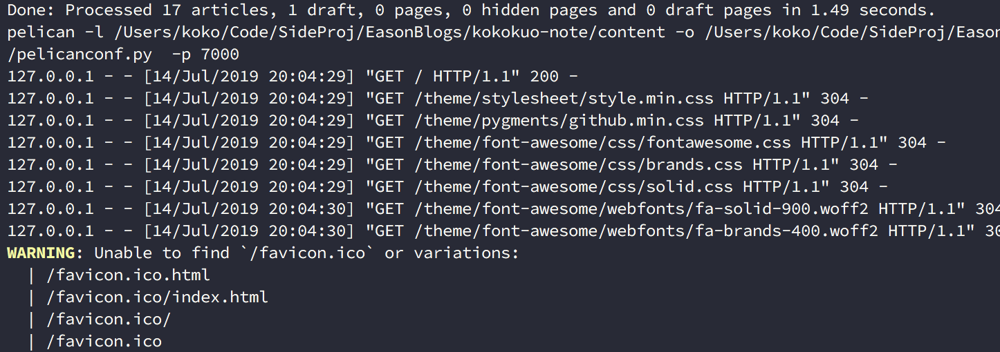
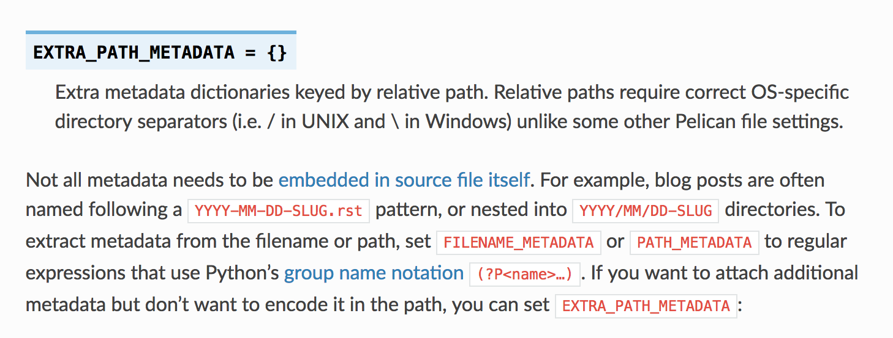
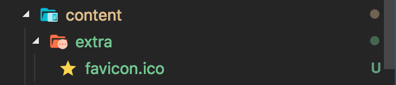
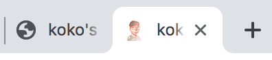
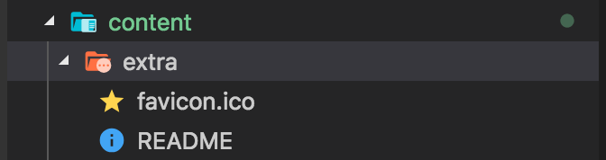
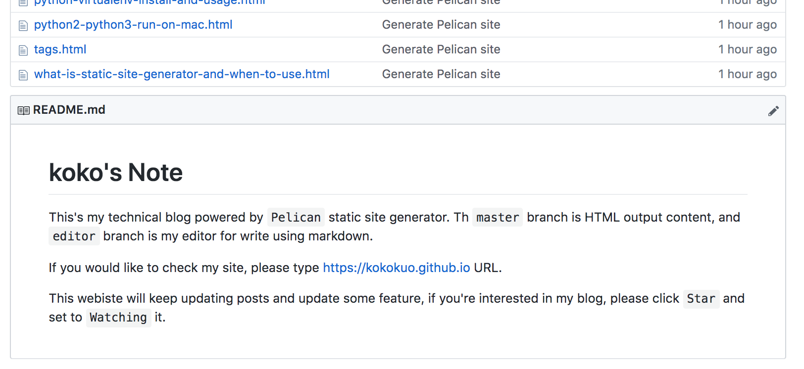

Pelican - 常用參數設定介紹與功能設定
Posted on Fri 15 March 2019 in posts
前言
如果你的 Pelican 靜態網站剛架好，並且正在苦思一些設定，例如 Favicon 、客製化頁面、設定分類與標籤頁面、如何安裝留言板與 Google Analystic 與 robot.txt 等等，那麼此篇非常歡迎你來瞧瞧，接著會介紹一些常用的 Pelican 的設定參數用途，希望能幫助到你。
另外如果你對如何架設 Pelican 、部署網站、使用 Pelican 的主題...等有疑慮的話，也歡迎你閱讀我前幾篇寫的文章，來幫助你更多認識唷。
- 在 Mac 上使用 Python 的 Pelican 建立靜態個人網誌
- 使用 Github Page 作為靜態網誌的空間 - 以 Pelican 為例
- Python - 安裝 Pelican Theme 來改變你的靜態網站主題
接著我們來進入正題！
設定 Favicon
在使用 Pelican 時如果有注意到的話，會發現當我們透過 make serve PORT=[number] 後，每當開啟網頁請求時，都會跳出，找不到 Favicon 的警告，如下圖：

Favicon 是網站圖示，主要被用在瀏覽器的網址搜尋列圖示或是書籤列圖示等等，尺寸通常在 100 多或 100 以下 Pixel 的大小 ( 更多介紹可以查看 Wiki )，副檔名為 ico。 而在 Pelican 中雖然不會影響，但是會被作為不完全的警告，因此我們接著來把 Favicon 加入進去。
另外 Favicon 有許多網站有在提供免費的圖像格式檔案轉換 ( png, jpg 轉 ico )，例如我在這邊使用的是 Favicon 線上製作轉換工具，另外 Favicon 有不同的尺寸，有興趣的可以看此篇 - Does a favicon have to be 32x32 or 16x16?。
接著要開始設定 Pelican 的 Favicon 並顯示，有我們需要借助在 Pelican 文件中提到的 EXTRA_PATH_METADATA 設定參數：

透過 EXTRA_PATH_METADATA 參數加入想要的特定的檔案到來源目錄 content 下，並在 make html 輸出成 HTML 後，自動產生在輸出目錄 output 指定的位置中。
不過 EXTRA_PATH_METADATA 需要與 STATIC_PATHS 搭配，因為 STATIC_PATHS 會告知 Pelican 哪些檔案或目錄屬於靜態文件，唯有指定後，才會在輸出時複製檔案並且生效。
這個原因是因為一般的靜態網站，通常分為 HTML 內容與靜態文件 (Static Files)，這些文件則是資源檔案（圖片、影片、影訊檔案）、CSS 與 JS 檔案，而在 Pelican 中，因為也是靜態網站，所以 Pelican 需要知道哪些檔案或目錄，會被歸類成靜態文件，才能在輸出成 HTML 時作用並複製放到到輸出 HTML 的目錄下。
如下例子 EXTRA_PATH_METADATA 中的 'static/robots.txt' 是指在 content 下 static 的檔案，其投射到 HTML 時，被放置在 output 的根目錄。
但是因為有指定該來源路徑的內容要被歸類在 STATIC_PATHS 中，因此輸出才會作用，Pelican 才會複製該檔案，並藉由 EXTRA_PATH_METADATA 得知要放到根目錄中。
STATIC_PATHS = [
'static/robots.txt',
]
EXTRA_PATH_METADATA = {
'static/robots.txt': {'path': 'robots.txt'},
}
因此接著我們先把 Favicon 放到在 content 底下建立的 extra 目錄中（如果沒有建立直接建立此目錄）:

# 設定哪些目錄或檔案，要被視為靜態文件，並且放置到輸出目錄下
STATIC_PATHS = [
"images",
"extra/favicon.ico"
]
# 用來設定複製到輸出目錄時，該 extra/favicon.ico 會被投放對應的位置，這邊設定在根目錄下
EXTRA_PATH_METADATA = {
"extra/favicon.ico": {"path": "favicon.ico"},
}
因為 Pelican 預設會把 images 目錄視為靜態文件放置輸出目錄下，所以在設定 extra/favicon.ico 時不能省略。
之後設定 EXTRA_PATH_METADATA，並指定要求輸出目錄後，放到根目錄下，如此在 HTML 輸出目錄後便會出現在根目錄當中。
接著我們 make clean 後再輸入 make html && make serve PORT=[number] 執行，便會看到原本在 content/extra/ 的 favicon.ico 也出現在 output 下：

之所以會放到根目錄的原因是因為在 Pelican 中有提到像 favicon.ico、robot.txt 可以放在根目錄會直接作用，所以在上述的 favicon.ico 在使用 EXTRA_PATH_METADATA 設定路徑時，path 直接放在最上層，所以在 make html 時才會直接出現在 output 下，接著透過 make serve 執行後也會顯示該 favicon.ico :

在 master 分支加入 README
在使用 Pelican 建置靜態網站時，因為預設是使用 Markdown 來撰寫，所以 Pelican 會有功能協助我們在網站發佈成網頁時都需要轉換成 HTML 這個便利性。
可是如果你的網站是放在 Github Page 中的 Repository master 分支，那你可能也會希望如同往常使用 Github 一樣，當別人逛到該 Repository 也可以有一個 README 認識該 Repository。
但現在卻因 Pelican 會需要轉換 Markdown 成 HTML 呈現網頁而造成衝突，那該如何是好呢？
不用擔心，在這裡我們一樣透過 EXTRA_PATH_METADATA 與 STATIC_PATHS 參數，讓我們的網站的 README 可以不被放在文章的 content/posts。
接著因為 Pelican 會檢查 markdown 副檔名的檔案，所以一開始也不能把檔案的副檔名也標示出來，最後藉由 Pelican 轉換時自己轉換檔案名稱就可以搞定囉，以下我們來看一下：
首先建立一個 README 檔案，並放到 content/extra 下，此時該 README 不能有副檔名（ 但是內容需保持 Markdown 格式 ）:

接著我們在 pelicanconf.py 中添加此段：
# 設定哪些目錄或檔案，要被視為靜態文件，並且放置到輸出目錄下
STATIC_PATHS = [
"images",
"extra/README",
"extra/favicon.ico"
]
# 用來設定複製到輸出目錄時，該 extra/README 會被投放對應的位置，這邊設定在根目錄下，並且關鍵是 Path 設定為 .md 副檔名
EXTRA_PATH_METADATA = {
"extra/README": {"path": "README.md"},
"extra/favicon.ico": {"path": "favicon.ico"},
}
以會看到我們添加了 README 的部分，並且關鍵在於 path 設定為 .md 副檔名，之後一樣的 make clean 再 make html 就會看到檔案在 output 這個根目錄下囉：

最後我們在透過 make github 把這個新版的內容部署到 Github 的 master 上：

也可以點擊我的 Github Page 查看。
另外由於先前我們把 favicon.ico 與這個 README 檔案都放在 extra 底下，因此當有多個檔案時，如果這些檔案未來都是要顯示設為靜態文件，可以直接對 STATIC_PATHS 改成指定目錄 ( 如同 images ) ：
STATIC_PATHS = [
"images",
"extra"
]